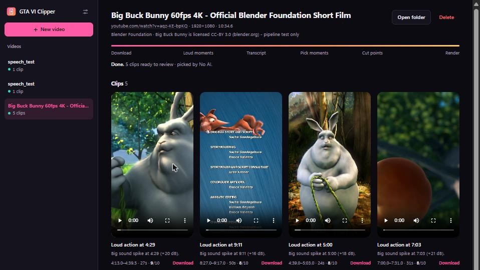
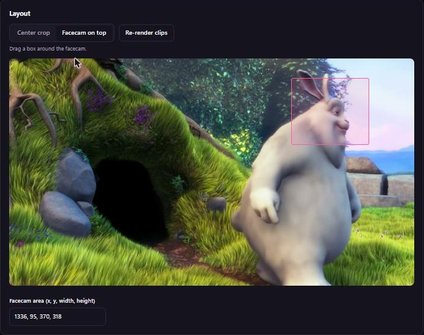
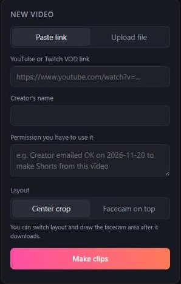

Paste a YouTube or Twitch VOD link. GTA VI Clipper finds the funniest, loudest and most chaotic moments, then cuts them into 1080x1920 clips with big captions, ready for Shorts, TikTok or Reels. Works out of the box; add Claude or a free local AI for smarter picks.
Download for Windows
Everything happens on your own computer. You review every clip yourself; the app never uploads or posts anything.
Paste a YouTube or Twitch VOD link, or upload a video file from your PC.
Finds explosions, crashes and screaming, because big action doesn't always show up in a transcript.
Writes down every spoken word with its exact time, using your graphics card when it can.
Claude, a free AI model running on your PC, or a no-AI scorer picks the best 20–60 second moments, each with a title and a reason.
Moves every start and end so no sentence or action gets cut off halfway.
Makes 1080x1920 clips with large, readable captions that appear as the words are spoken.

Choose a simple center crop, or the streamer layout: drag a box around the facecam on a frame of the video, and the clips put it on top with the gameplay underneath. Changing the layout only re-renders the clips, so it takes about a minute.
Every video needs the creator's name and the permission you have to use it. Both are saved next to every clip, so you always know where a clip came from.

Choose per video. Automatic uses the best one set up on your PC. If Claude isn't available, it falls back on its own.
Understands what's happening, like a setup and its payoff, a fail or a funny line, and writes real titles. Needs Claude Code and a Claude plan; each video uses one short request from your plan's normal usage limits.
An AI model running privately on your own PC through Ollama. Nothing leaves your computer. One-time download of about 5 GB. Smart, but less so than Claude.
Scores every stretch of the video by loudness, reactions like “no way” or laughing, and talking speed. Works straight after install, with no account and no download.
The installer is small. The app downloads its larger parts the first time you open it, from a checklist with one-click buttons.
GTA6-Clipper-Setup.exe. No admin rights needed.Only clip videos you're allowed to use: your own, or ones whose creator has given you permission. Downloading and re-uploading other people's videos may break YouTube's or Twitch's terms of service, and copyright law. You're responsible for what you post.